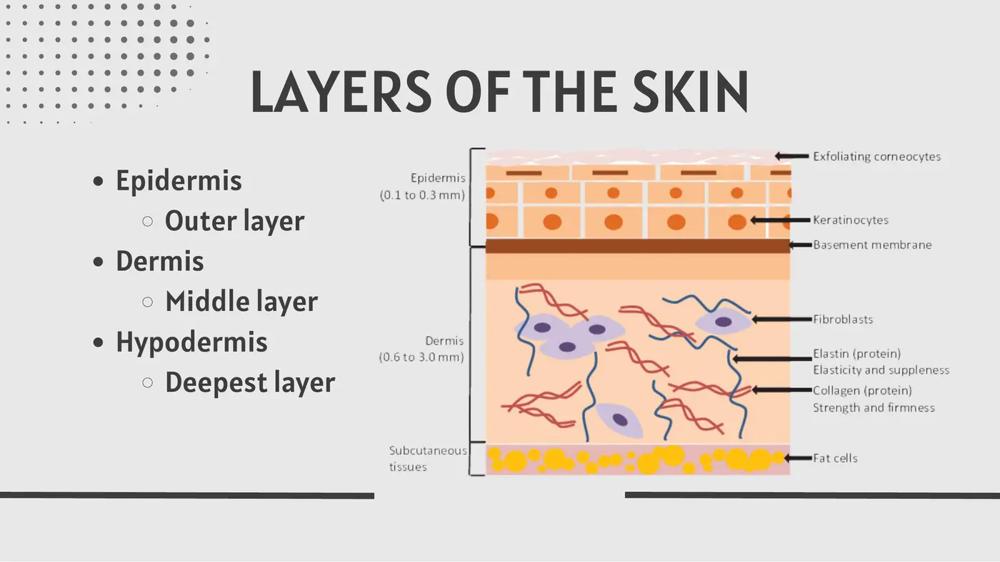
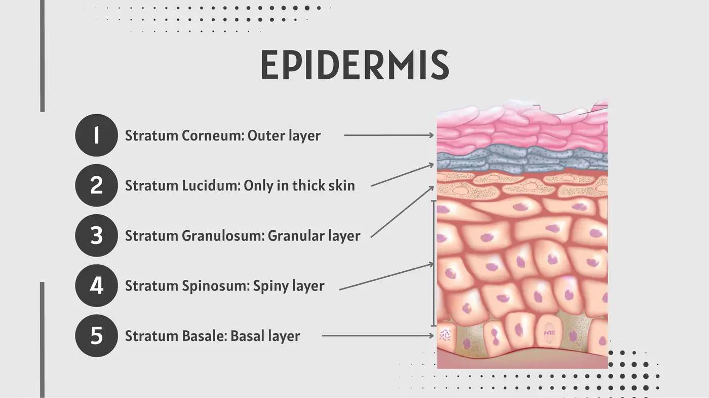
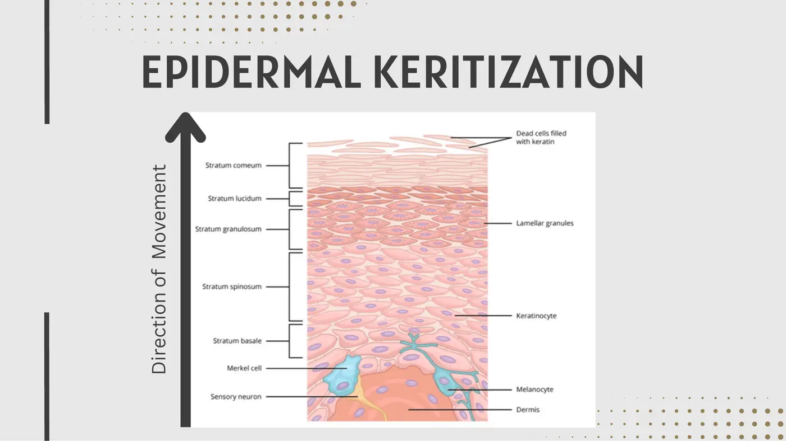
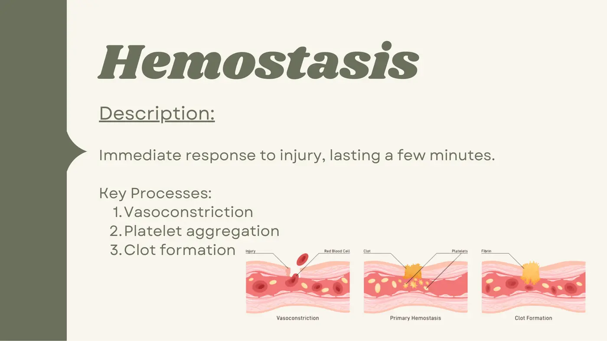
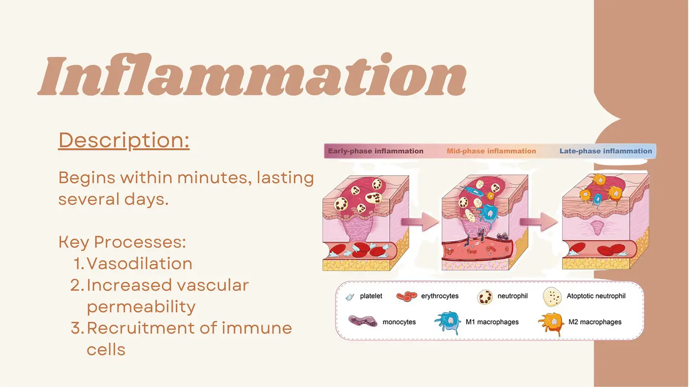
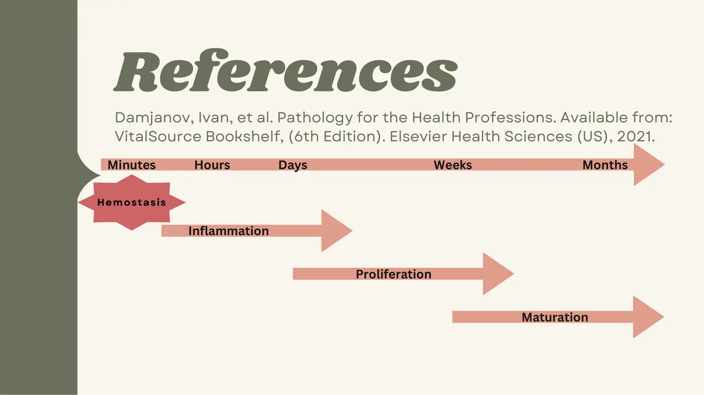
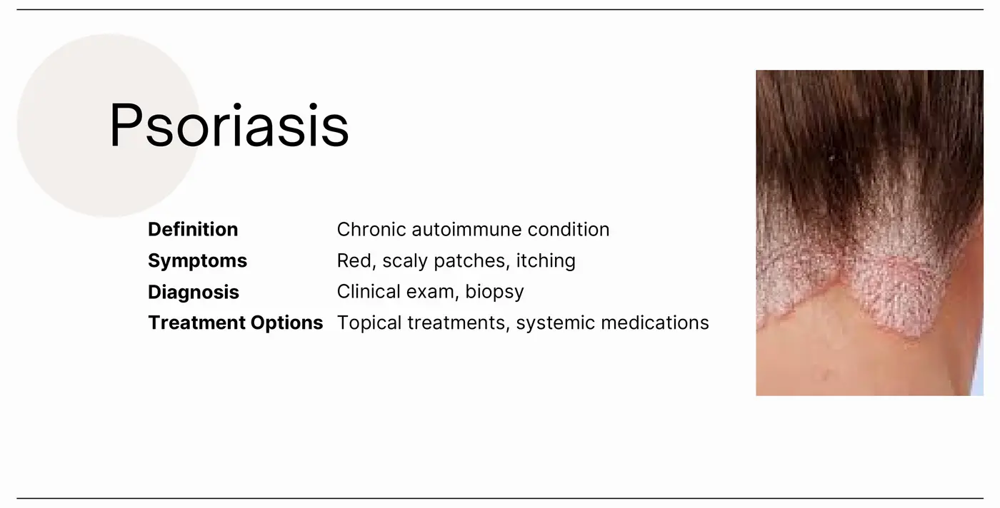
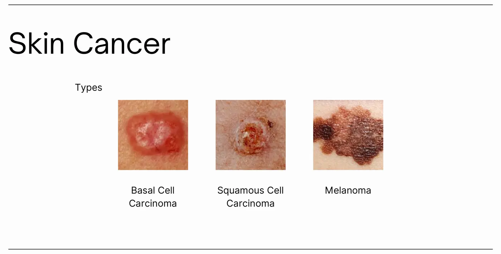
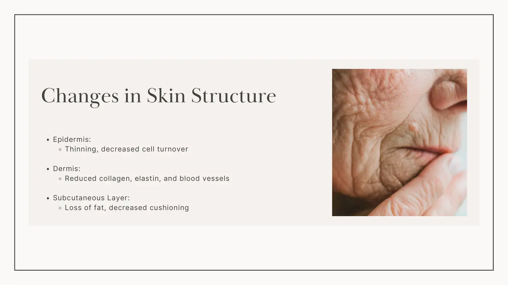

Human Physiology · 6131
Module 2 — The Integumentary System
Topics: 2.1 Introduction to the Integumentary System • 2.2 Disorders of the Integumentary System • 2.3 The Aging Integument • 2.4 Team-Based Exams
📖 How to Use These Notes
- Best used with the lecture playing — keep these open, follow along, and add your own notes as you watch
- Lecture banners mark the start of each topic and run in the same order as the videos
- 🎙 Callouts = direct insights from the instructor's transcript
- ★ Tips = exam-relevant content or things the instructor told you to prepare
- Figures are taken directly from the module's slide decks
- Each topic ends with its own Quick-Reference Glossary
- Written from last year's recordings — if a lecture has been re-recorded or resequenced, Canvas wins
- Watch this module's lecture videos (Dr. K) in your own Canvas module — video links are cohort-specific
- This module ends with the course's FIRST team-based assessment: individual quiz, then team quiz (Zoom + webcam)
TOPIC 2.1
Introduction to the Integumentary System
Three lectures build this topic: the system's structure, its functions in depth, and wound healing. It is the foundation for the disorders (2.2) and aging (2.3) topics — and integ returns in force later in the program (Complex Patients; wound care in semester 4).
1. Overview and the Three Layers
- Functions of the system: protection, sensation, thermoregulation, excretion, absorption. It is the first line of defense against pathogens, maintains homeostasis, and acts as a visible indicator of underlying systemic disease.
- Three layers: epidermis (outer), dermis (middle), hypodermis (deepest, subcutaneous — you may hear “sub-Q”).

2. The Epidermis: Cells and Five Strata
| Cell type | Job |
|---|---|
| Keratinocytes | Produce keratin — the structural protein of the barrier |
| Melanocytes | Produce melanin — pigment + UV protection |
| Langerhans cells | Immune response — detect foreign pathogens |
| Merkel cells | Sensory perception |

| Stratum (superficial → deep) | What it does |
|---|---|
| Corneum — “horny layer” | Outermost barrier vs environmental damage and water loss; dead keratinized cells continuously shed and replaced |
| Lucidum — “clear layer” | Thick skin only (palms, soles); extra protection; reduces friction and shear between corneum and granulosum |
| Granulosum — granular | Keratinization begins: cells start to die and stiffen; granules aggregate keratin; fluid-loss barrier |
| Spinosum — spiny | Strength + flexibility; keratinocytes linked by desmosomes (the spiny look); houses Langerhans cells |
| Basale — basal | Continuous mitosis makes new keratinocytes; houses melanocytes + Merkel cells; basement membrane anchors epidermis to dermis |
3. Keratinization

- The journey: born by mitosis in the basale → synthesize keratin in the spinosum → apoptosis in the granulosum (lose nuclei and organelles; granule proteins aggregate keratin filaments → the waterproof barrier) → through the lucidum in thick skin → arrive at the corneum flat, anuclear, keratin-packed, and lipid-surrounded.
4. Dermis and Hypodermis
- Dermis key cells: fibroblasts, producing collagen (strength) and elastin (elasticity). Also carries the blood vessels that feed the skin and the nerves that produce sensation.
| Papillary layer (superficial) | Reticular layer (deep) |
|---|---|
| Thin; molds against the epidermal ridges | Thicker; dense connective tissue |
| Loose, small collagen fibers | Relatively acellular and avascular compared with surrounding tissue |
| Blood + lymphatic vessels — more papillary flow = more heat lost (thermoregulation lever) |
- Hypodermis: adipose tissue (fat = stored energy, cushioning) + connective tissue (structural support).
5. Accessory Structures
| Structure | Know this |
|---|---|
| Hair follicles | Live in the dermis, attached to sebaceous glands; present in hairy skin, absent on palms and soles |
| Nails | Hard keratin; grow from the matrix via onychogenesis |
| Sebaceous glands | Secrete sebum — lubricates skin and hair (and contributes chemical defense, below) |
| Sweat glands | Eccrine = thermoregulation; apocrine = body odor |
6. Functions in Depth
| Protection level | Mechanism |
|---|---|
| Physical | The barrier itself blocks harmful substances and pathogens; melanin adds UV protection |
| Chemical | Sebum + acidic skin surface deter microbial growth |
| Biological | Resident immune cells launch responses against invaders |
- Sensation — three receptor families: mechanoreceptors (subtypes for light touch, deep pressure, high-frequency vibration, sustained pressure, texture, skin stretch), thermoreceptors (cold and warm — drive shivering and sweating), nociceptors (pain: mechanical damage, temperature extremes, chemical irritants).
- Thermoregulation — vasodilation moves blood to the surface to dump heat; vasoconstriction conserves it; sweat evaporation pulls heat energy off the body. This is what fails in heat exhaustion and heat stroke.
- Excretion & absorption — sweat carries water, electrolytes, and small amounts of urea and lactic acid, complementing the kidneys (matters in renal dysfunction and heat). The skin selectively absorbs — transdermal patches (nicotine, analgesics) deliver steady doses to the bloodstream. Vitamin D synthesis under sunlight supports calcium absorption and bone health.
7. Wound Healing: Four Overlapping Phases

| Phase | Timing | Key processes |
|---|---|---|
| 1. Hemostasis | Immediate; minutes | Vasoconstriction → platelet aggregation → clot; stabilizes the site for what follows |
| 2. Inflammation | Starts within minutes; lasts several days | Vasodilation, increased vascular permeability, immune-cell recruitment — clears debris, prevents infection |
| 3. Proliferation | Days to a few weeks | Fibroblast activity, collagen deposition, granulation tissue, angiogenesis (new vessels bring O₂ + nutrients) |
| 4. Maturation | Months to years | Collagen remodeling, cellular activity winds down, tensile strength builds; scar formation typical |


- Scar tissue is always weaker than the original skin — a healed wound never regains full pre-injury strength.
| Intrinsic factors (inside the person) | Extrinsic factors (from outside) |
|---|---|
| Age | Infection (germs enter from outside — that's why it's extrinsic) |
| Nutrition | Medications |
| Comorbidities (e.g., diabetes) | Smoking |
| Oxygenation | Mechanical stress over the wound |
- Growth factors (proteins regulating cell growth, differentiation, healing): EGF, VEGF, PDGF. Cytokines (small cell-to-cell signaling proteins): interleukins (IL-1, IL-6), TNF-α. Working together they recruit cells to the wound, promote angiogenesis, and regulate inflammation.
📚 Required Reading — Topic 2.1
- Hamm — Anatomy and Physiology of the Integumentary System (AccessMedicine — foundational structure and function)
- OpenStax A&P — Unit 5: The Integumentary System, §5.1–5.3 (free)
Also required: Damjanov, Pathology for the Health Professions — Ch 2 “Healing and Repair,” pp. 31–32 (course textbook, VitalSource).
Topic 2.1 — Quick-Reference Glossary
| Term | Definition |
|---|---|
| Keratinocyte / keratin | Dominant epidermal cell / its barrier protein |
| Melanocyte / melanin | Pigment cell / UV-protective pigment |
| Langerhans / Merkel cells | Epidermal immune sentinel / sensory cell |
| Corneum–lucidum–granulosum–spinosum–basale | The five strata, superficial → deep; lucidum only in thick skin |
| Keratinization | Living basale cells → dead keratin-packed corneum cells |
| Desmosome | Cell-cell junction giving the spinosum its spiny look and strength |
| Papillary vs reticular dermis | Thin/vascular/heat-losing vs thick/dense/relatively avascular |
| Onychogenesis | Nail growth from the matrix |
| Eccrine vs apocrine | Thermoregulatory sweat vs body-odor sweat |
| Hemostasis → inflammation → proliferation → maturation | The four overlapping wound-healing phases |
| Angiogenesis | New blood-vessel formation (proliferation phase) |
| EGF / VEGF / PDGF | Growth factors coordinating repair |
| IL-1, IL-6, TNF-α | Cytokines regulating inflammation and immunity |
TOPIC 2.2
Disorders of the Integumentary System
1. Inflammatory and Autoimmune Conditions

| Condition | Presentation | Diagnosis | Treatment |
|---|---|---|---|
| Psoriasis | Chronic autoimmune; red scaly patches, often itchy | Clinical exam ± biopsy | Topicals, phototherapy, systemic meds |
| Eczema (atopic dermatitis) | Chronic inflammatory; intense itching, redness, rash | Clinical history ± patch testing | Maintain moist skin barrier, topical steroids, avoid triggers |
| Dermatitis | Broad umbrella term for skin inflammation — contact (irritant touch, e.g., a ring) vs seborrheic | Clinical assessment + allergy testing (allergic contact tests positive; eczema doesn't always) | Avoid irritants, topicals |
2. Skin Infections
| Type | Examples | Presentation | Dx / Tx |
|---|---|---|---|
| Bacterial | Impetigo, cellulitis, folliculitis | Redness, swelling, pus; cellulitis hurts | Clinical + culture / antibiotics + wound care |
| Viral | Herpes simplex, warts | Blisters and sores — an open (popped) blister is peak contagion | Clinical + PCR / antivirals, sometimes cryotherapy |
| Fungal | Ringworm, athlete's foot | Itching, scaling, redness | KOH test/culture / antifungal cream, oral meds if severe |
3. Skin Cancer

| Type | Know this |
|---|---|
| Basal cell carcinoma | Most common; usually from UV exposure |
| Squamous cell carcinoma | Second most common; may have metastasized by the time it's found |
| Melanoma | Most dangerous — the one to be most vigilant for |
- Diagnosis is biopsy ± imaging — not ours. But PTs see more of a patient's body surface than almost any other provider: flag suspicious or brightly colored moles and refer. Treatment: surgical excision; chemo, radiation, or immunotherapy when severe. Early detection = best outcomes.
4. The PT's Role
- Manage patients who have skin disorders: wound care when indicated, skin-protection strategies, rehab goals centered on function, pain management, and preserving quality of life.
📚 Required Reading — Topic 2.2
- OpenStax A&P — Unit 5: The Integumentary System, §5.4 (diseases/disorders section, free)
Also required: Damjanov, Pathology for the Health Professions — Ch 18 “Special Pathology,” pp. 351–357 (course textbook, VitalSource).
Topic 2.2 — Quick-Reference Glossary
| Term | Definition |
|---|---|
| Psoriasis | Chronic autoimmune scaly patches; exam ± biopsy |
| Eczema / atopic dermatitis | Chronic inflammatory itch-redness-rash; history ± patch test |
| Contact vs seborrheic dermatitis | Irritant-triggered vs not; allergy testing separates from eczema |
| Cellulitis | Painful bacterial infection between skin tissues; antibiotics + wound care |
| KOH test | Fungal diagnostic scraping |
| BCC / SCC / melanoma | Most common / possibly metastatic at discovery / most dangerous |
| PT role | Recognize, refer, and manage the patient — not diagnose |
TOPIC 2.3
The Aging Integument
1. Two Aging Processes, Three Aging Layers
| Intrinsic aging | Extrinsic aging |
|---|---|
| Natural biological process | Environmental: UV exposure, pollution |
| Decreased collagen and elastin formation | Lifestyle: smoking, dietary choices |

| Layer | Aging change |
|---|---|
| Epidermis | Thins; cell turnover (keratinization) slows |
| Dermis | Collagen and elastin drop; blood-vessel numbers fall — more avascular |
| Subcutaneous | Fat loss → less cushioning → fragile, thin skin |
2. Age-Related Skin Conditions (Normal, Not Pathology)
| Condition | Cause | Management |
|---|---|---|
| Hyperpigmentation | Sun exposure, inflammation, hormonal changes (pregnancy, menopause) | Sun protection; retinoids or laser therapy |
| Pruritus (chronic itching) | Usually dry skin; also medical conditions, medications | Moisturizers → OTC antihistamines → medical team treats the underlying cause |
| Dry skin | Decreased oil production + moisture loss | Moisturize |
| Wrinkles / fine lines | Lost elasticity + collagen production | — |
| Skin laxity (sagging) | Lost firmness + deep adipose | — |
3. Functional Impact and the PT's Role
- Aging impairs skin function three ways: the barrier weakens (less protection against pathogens and injury), thermoregulation is compromised (aging adults usually run cold), and wound healing slows — with increased infection risk.
- Skin care for the elderly is squarely within PT scope: educate on skin protection, hydration, and monitoring; write goals for skin integrity, wound healing, and overall function.
Required reading: the Skin Maturation handout — a copy is in this course's Readings folder in this Drive.
Topic 2.3 — Quick-Reference Glossary
| Term | Definition |
|---|---|
| Intrinsic vs extrinsic aging | Biology (collagen/elastin decline) vs environment + lifestyle |
| Hyperpigmentation | Darkened patches — sun, inflammation, hormones |
| Pruritus | Chronic itching, usually from dry skin |
| Skin laxity | Sagging from lost firmness and deep fat |
| Aging functional triad | Weaker barrier, poorer thermoregulation, slower healing |
TOPIC 2.4
Team-Based Exams
This module introduces the assessment format used for the rest of the course — including the midterm and final. First exposure comes in the week-3 sync session. Four short written guides in Canvas back up this lecture; their content is folded in below.
1. Why Teams, and Who Does What
- Team-based assessment pairs individual accountability with collective problem-solving — studies show deeper understanding, better retention, stronger problem-solving. Teams are pre-selected by faculty from your admission surveys and strengths.
| Role | Responsibilities | Key skills |
|---|---|---|
| Team Leader | Facilitate discussion, make sure every voice is heard, guide to consensus | Leadership, communication, time management |
| Scribe | Record final answers and key discussion points; submits the team quiz on Canvas | Attention to detail, organization, clarity |
| Timekeeper | Keep the team on schedule — every assessment is timed | Time management, assertiveness |
| Team Members | Participate actively, provide input, support decisions | Communication, critical thinking, collaboration |
2. Contributing and Debating Well
- Meaningful contribution = prepare thoroughly before the meeting, participate actively, communicate respectfully, offer constructive feedback, and fulfill your assigned role. You don't need to be the leader to matter.
| Debate strategy | Sounds like | Why it works |
|---|---|---|
| “I” statements | “I believe that…” / “I feel that…” | Less confrontational |
| Clarifying questions | “Can you explain what you mean by…?” | Shows interest; clears misunderstandings |
| Paraphrase + summarize | “So you're saying that…” | Proves active listening; confirms accuracy before deciding |
| Agree to disagree | Accept when consensus can't be reached | Preserves team harmony |
| Stay calm and composed | No raised voices, even in disagreement | Keeps the debate productive |
3. How an Assessment Day Runs
| Step | What happens |
|---|---|
| 1. Individual quiz | Timed, no resources, on that week's material |
| 2. Team quiz | Immediately after; discussion allowed, no external resources; scribe submits one set of answers on Canvas |
| 3. Break | Short rest — let your brain turn off |
| 4. Feedback session | Faculty-led discussion of key concepts from the quiz (not the answer key) |
| 5. Application assignment | Group task synthesizing everything; timed, resources allowed |
4. Scoring
- Your individual score stands on its own — then 5% of the team's score is added to it to reward teamwork. Worked example from the guide: individual 80%, team 90% → 5% of 90 = 4.5 points → final 84.5%.
- The format recurs: team case studies through the semester, and the midterm and final both run individual quiz → break → team quiz. Check the syllabus for scheduling.
- An optional research study on team-based learning runs alongside the course (anonymized, aggregate-only, ~10 min of surveys, optional focus group, zero effect on grades) — sign-up appears on Canvas and in sync sessions.
Topic 2.4 — Quick-Reference Glossary
| Term | Definition |
|---|---|
| Team-based assessment | Individual quiz first, then the same material as a team |
| Leader / Scribe / Timekeeper / Members | The four assigned roles; scribe submits on Canvas |
| 5% rule | Final = individual score + 5% of team score |
| Application assignment | Post-feedback group task; timed, resources allowed |
| “I” statements | The go-to de-escalation tool for team debate |
SYNC SESSION
The Integumentary System — First Team-Based Exam
The sync session for this module exists to acclimate you to team-based exams (scheduled in week 3 for your cohort — check your Canvas calendar).
| Part | Plan |
|---|---|
| 1 | Brief overview of team-based exams |
| 2 | Team quiz — ~20 minutes, in your assigned teams |
| 3 | Feedback session — ~30 minutes, built from the quiz content |
| 4 | Open discussion and review |
✅ Module 2 Assessments
- Integumentary Individual Quiz — timed, no resources
- Integumentary Team Quiz — requires Zoom + webcam
- Harmonize “Muddy Points” discussion — optional